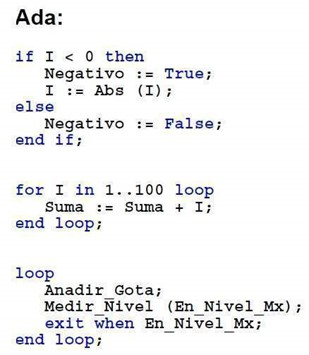

Tarea 12 - Ada
Ada es un lenguaje de programación orientado a objetos y fuertemente tipado de forma estática que fue diseñado por Jean Ichbiah de CII Honeywell Bull por encargo del Departamento de Defensa de los Estados Unidos. Es un lenguaje multipropósito, orientado a objetos y concurrente, pudiendo llegar desde la facilidad de Pascal hasta la flexibilidad de C++.
Fue diseñado con la seguridad en mente y con una filosofía orientada a la reducción de errores comunes y difíciles de descubrir. Para ello se basa en un tipado muy fuerte y en chequeos en tiempo de ejecución (desactivables en beneficio del rendimiento). La sincronización de tareas se realiza mediante la primitiva Rendezvous.
Ada se usa principalmente en entornos en los que se necesita una gran seguridad y fiabilidad como la defensa, la aeronáutica (Boeing o Airbus), la gestión del tráfico aéreo (como Indra en España) y la industria aeroespacial entre otros. La sintaxis, inspirada en Pascal, es bastante legible incluso para personas que no conozcan el lenguaje. Es un lenguaje que no escatima en la longitud de las palabras clave, en la filosofía de que un programa se escribe una vez, se modifica decenas de veces y se lee miles de veces (legibilidad es más importante que rapidez de escritura).
Es indiferente el uso de mayúsculas y minúsculas en los identificadores y palabras claves, es decir es un lenguaje case-insensitive. En Ada, todo el programa es un único procedimiento, que puede contener subprogramas (procedimientos o funciones).
Cada sentencia se cierra con end qué_cerramos. Es un modo de evitar errores y facilitar la lectura. No es necesario hacerlo en el caso de subprogramas, aunque todos los manuales lo aconsejan y casi todos los programadores de Ada lo hacen. El operador de asignación es :=, el de igualdad =. A los programadores de C y similares les puede confundir este rasgo inspirado en Pascal. La sintaxis de atributos predefinidos es Objeto'Atributo (o Tipo'Atributo) (nota: esto sólo aplica a atributos predefinidos por el lenguaje, ya que no es el concepto de atributo típico de OOP).
Se distingue entre "procedimientos" (subrutinas que no devuelven ningún valor pero pueden modificar sus parámetros) y "funciones" (subrutinas que devuelven un valor y no modifican los parámetros). Muchos lenguajes de programación no hacen esta distinción. Las funciones de Ada favorecen la seguridad al reducir los posibles efectos colaterales, pues no pueden tener parámetros in out.
Descargar Ada aquí
Ejemplo de código:
